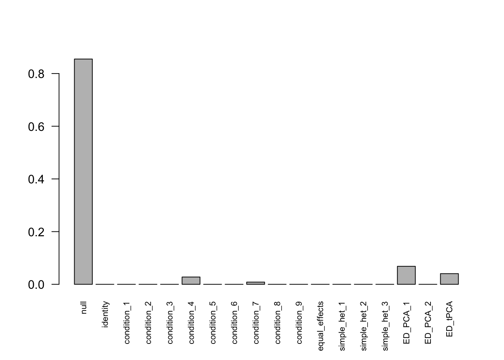
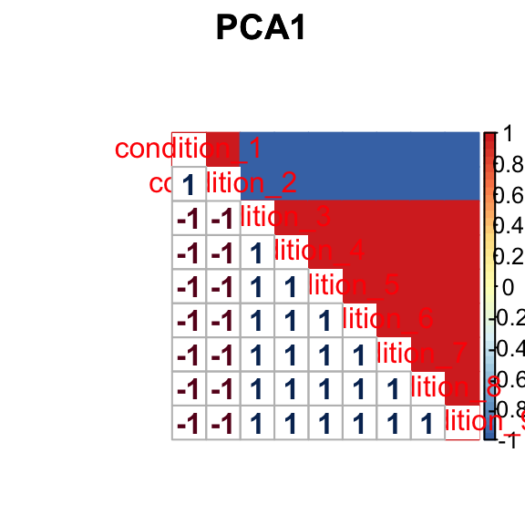
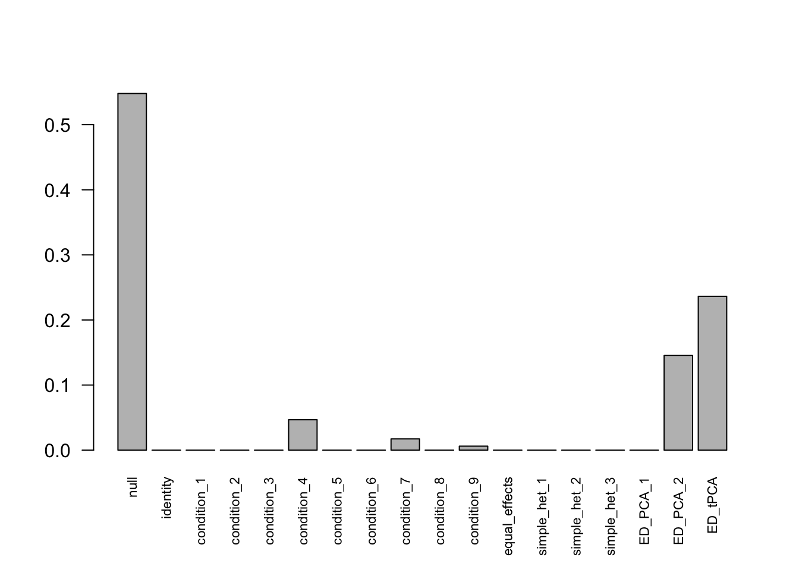
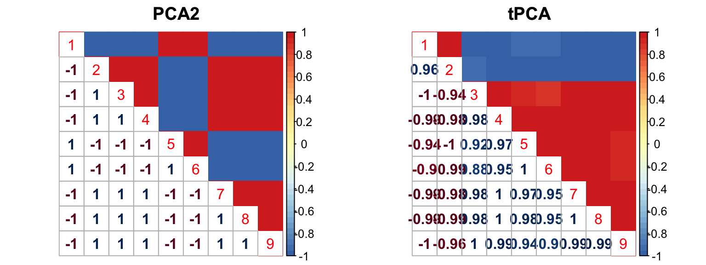
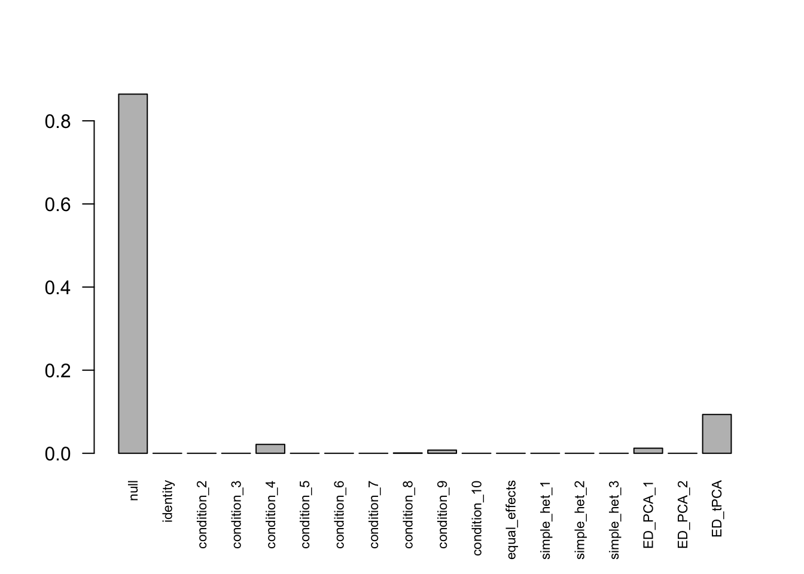
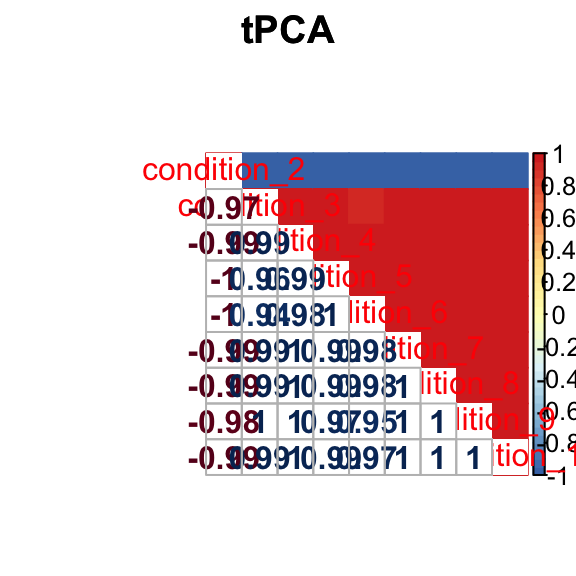
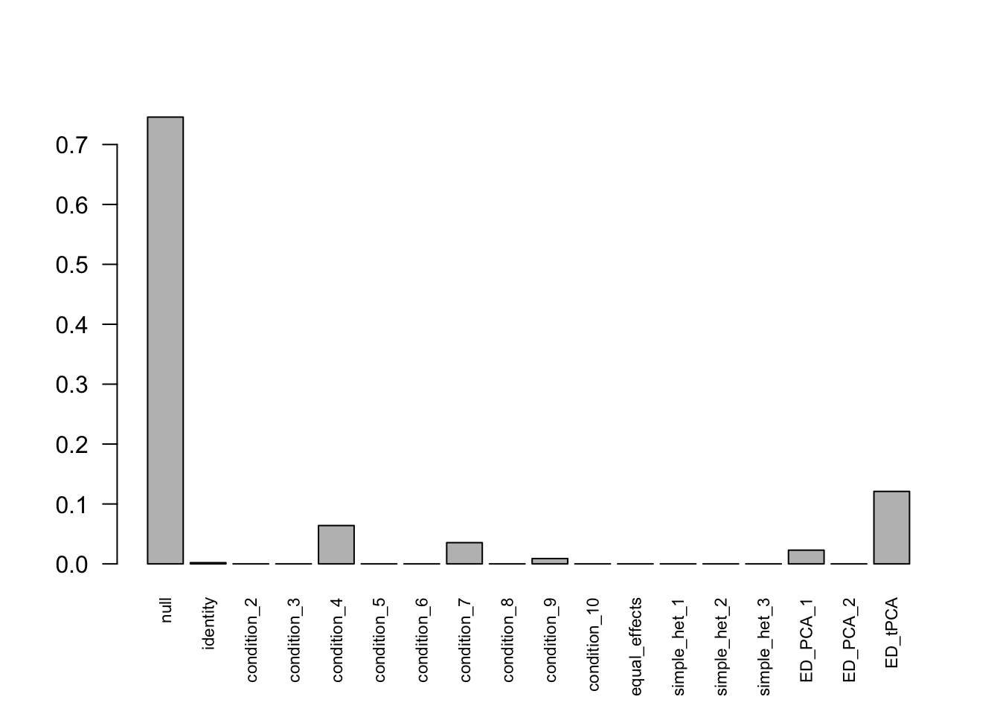
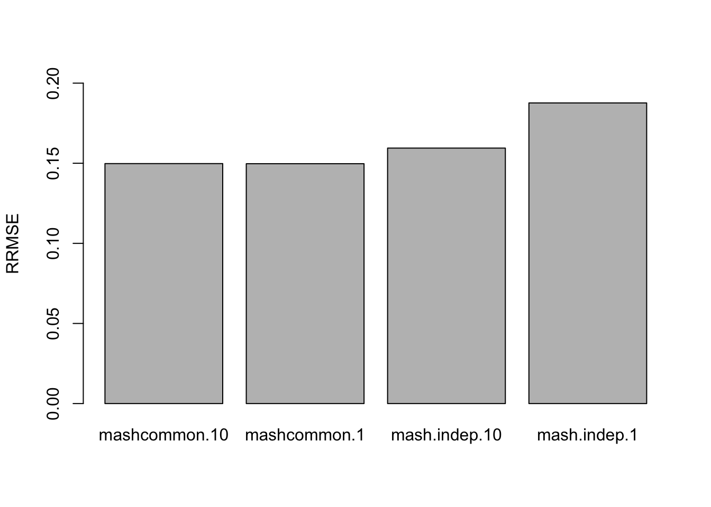
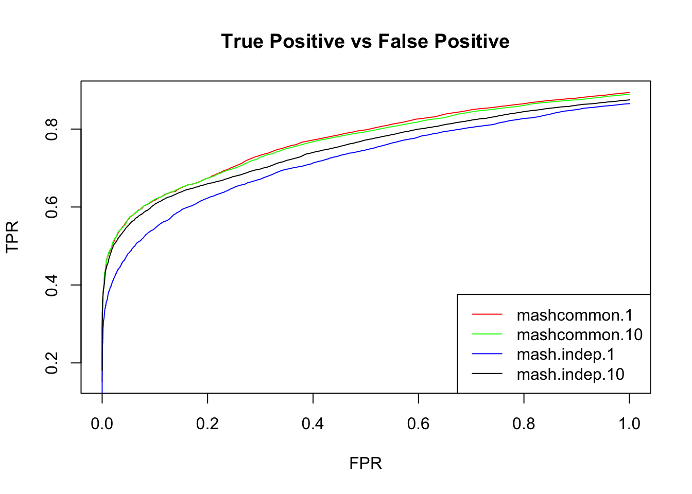

Last updated: 2018-05-16
Code version: 955e583
Loading required package: ashrcorrplot 0.84 loadedset.seed(1)
R = 10
C = 2
data = sim.mean.sig(nsamp=10000, ncond=C)L.full = matrix(-1/R, R, R)
diag(L.full) = (R-1)/R
row.names(L.full) = colnames(data$Chat)
mash_data = mash_set_data(Bhat=data$Chat, Shat=data$Shat)
mash_data_L_full = mash_set_data_contrast(mash_data, L.full)# data driven
# select max
m.1by1 = mash_1by1(mash_data_L_full)
strong = get_significant_results(m.1by1,0.05)
# center Z
mash_data_L_full.center = mash_data_L_full
mash_data_L_full.center$Bhat = mash_data_L_full$Bhat/mash_data_L_full$Shat # obtain z
mash_data_L_full.center$Shat = matrix(1, nrow(mash_data_L_full$Bhat),ncol(mash_data_L_full$Bhat))
mash_data_L_full.center$Bhat = apply(mash_data_L_full.center$Bhat, 2, function(x) x - mean(x))
U.pca.full = cov_pca(mash_data_L_full.center,2, strong)L.10 = L.full[1:(R-1),]
mash_data_L.10 = mash_set_data_contrast(mash_data, L.10)
mash_data_L.10.center = mash_data_L_full.center
mash_data_L.10.center$Bhat = mash_data_L_full.center$Bhat[,1:9]
mash_data_L.10.center$Shat = mash_data_L_full.center$Shat[,1:9]
# Discard Last col
U.pca.10 = lapply(U.pca.full, function(x) x[1:9,1:9])
U.ed.10 = cov_ed(mash_data_L.10.center, U.pca.10, strong)
# Canonical
U.c.10 = cov_canonical(mash_data_L.10)mashcontrast.model.10 = mash(mash_data_L.10, c(U.c.10, U.ed.10), algorithm.version = 'R', verbose = FALSE)barplot(get_estimated_pi(mashcontrast.model.10),las = 2, cex.names = 0.7)
View PCA 1 
Recover col 10
mashcontrast.model.10.full = mashcontrast.model.10
mashcontrast.model.10.full$result = mash_compute_posterior_matrices(g = mashcontrast.model.10, data = mash_data_L.10, algorithm.version = 'R', recover=TRUE)There are 289 discoveries.
If we subtract the mean from the data directly \[Var(\hat{c}_{j,r}-\bar{\hat{c}_{j}}) = \frac{1}{2} - \frac{1}{2R}\]
Indep.data.10 = mash_set_data(Bhat = mash_data_L.10$Bhat,
Shat = matrix(sqrt(0.5-1/(2*R)), nrow(data$Chat), R-1))
Indep.model.10 = mash(Indep.data.10, c(U.c.10, U.ed.10), algorithm.version = 'R', verbose = FALSE)There are 336 discoveries. The covariance structure found here is:
barplot(get_estimated_pi(Indep.model.10),las = 2, cex.names = 0.7) The weights for covariances are very different.
The correlation for PCA2 and tPCA is: 
Recover the last column
Indep.model.10.full = Indep.model.10
Indep.model.10.full$result = mash_compute_posterior_matrices(g = Indep.model.10, data = Indep.data.10, algorithm.version = 'R', recover=TRUE)There are 336 discoveries.
L.1 = L.full[2:R,]
mash_data_L.1 = mash_set_data_contrast(mash_data, L.1)
mash_data_L.1.center = mash_data_L_full.center
mash_data_L.1.center$Bhat = mash_data_L_full.center$Bhat[,2:10]
mash_data_L.1.center$Shat = mash_data_L_full.center$Shat[,2:10]
# Discard Last col
U.pca.1 = lapply(U.pca.full, function(x) x[2:10, 2:10])
U.ed.1 = cov_ed(mash_data_L.1.center, U.pca.1, strong)
# Canonical
U.c.1 = cov_canonical(mash_data_L.1)mashcontrast.model.1 = mash(mash_data_L.1, c(U.c.1, U.ed.1), algorithm.version = 'R', verbose = FALSE)barplot(get_estimated_pi(mashcontrast.model.1),las = 2, cex.names = 0.7)
View tPCA 
Recover the first column
mashcontrast.model.1.full = mashcontrast.model.1
mashcontrast.model.1.full$result = mash_compute_posterior_matrices(g = mashcontrast.model.1, data = mash_data_L.1, algorithm.version = 'R', recover=TRUE)There are 289 discoveries.
Indep.data.1 = mash_set_data(Bhat = mash_data_L.1$Bhat,
Shat = matrix(sqrt(0.5-1/(R*2)), nrow(data$Chat), R-1))
Indep.model.1 = mash(Indep.data.1, c(U.c.1, U.ed.1), algorithm.version = 'R', verbose = FALSE)For mashIndep model, there are 210 discoveries. The covariance structure found here is:
barplot(get_estimated_pi(Indep.model.1),las = 2, cex.names = 0.7)
Recover the first column
Indep.model.1.full = Indep.model.1
Indep.model.1.full$result = mash_compute_posterior_matrices(g = Indep.model.1, data = Indep.data.1, algorithm.version = 'R', recover=TRUE)There are 212 discoveries.
The RRMSE plot:
delta.10 = data$C - rowMeans(data$C)
deltahat.10 = data$Chat - rowMeans(data$Chat)
delta.1 = delta.10[, c(2:10, 1)]
deltahat.1 = deltahat.10[, c(2:10, 1)]
barplot(c(sqrt(mean((delta.10 - mashcontrast.model.10.full$result$PosteriorMean)^2)/mean((delta.10 - deltahat.10)^2)), sqrt(mean((delta.1 - mashcontrast.model.1.full$result$PosteriorMean)^2)/mean((delta.1 - deltahat.1)^2)), sqrt(mean((delta.10 - Indep.model.10.full$result$PosteriorMean)^2)/mean((delta.10 - deltahat.10)^2)), sqrt(mean((delta.1 - Indep.model.1.full$result$PosteriorMean)^2)/mean((delta.1 - deltahat.1)^2))), ylim=c(0,0.2), names.arg = c('mashcommon.10','mashcommon.1','mash.indep.10', 'mash.indep.1'), ylab='RRMSE')
We check the False Positive Rate and True Positive Rate. \[FPR = \frac{|N\cap S|}{|N|} \quad TPR = \frac{|CS\cap S|}{|T|} \]
sign.test.mash.10 = as.matrix(delta.10)*mashcontrast.model.10.full$result$PosteriorMean
sign.test.Indep.10 = as.matrix(delta.10)*Indep.model.10.full$result$PosteriorMean
sign.test.mash.1 = as.matrix(delta.1)*mashcontrast.model.1.full$result$PosteriorMean
sign.test.Indep.1 = as.matrix(delta.1)*Indep.model.1.full$result$PosteriorMean
thresh.seq = seq(0, 1, by=0.0005)[-1]
mashcontrast.1 = matrix(0,length(thresh.seq), 2)
Indep.1 = matrix(0,length(thresh.seq), 2)
mashcontrast.10 = matrix(0,length(thresh.seq), 2)
Indep.10 = matrix(0,length(thresh.seq), 2)
colnames(mashcontrast.1) = c('TPR', 'FPR')
colnames(Indep.1) = c('TPR', 'FPR')
colnames(mashcontrast.10) = c('TPR', 'FPR')
colnames(Indep.10) = c('TPR', 'FPR')
for(t in 1:length(thresh.seq)){
mashcontrast.1[t,] = c(sum(sign.test.mash.1>0 & mashcontrast.model.1.full$result$lfsr <= thresh.seq[t])/sum(delta.1!=0), sum(delta.1==0 & mashcontrast.model.1.full$result$lfsr <=thresh.seq[t])/sum(delta.1==0))
Indep.1[t,] = c(sum(sign.test.Indep.1>0& Indep.model.1.full$result$lfsr <=thresh.seq[t])/sum(delta.1!=0), sum(delta.1==0& Indep.model.1.full$result$lfsr <=thresh.seq[t])/sum(delta.1==0))
mashcontrast.10[t,] = c(sum(sign.test.mash.10>0 & mashcontrast.model.10.full$result$lfsr <= thresh.seq[t])/sum(delta.10!=0), sum(delta.10==0 & mashcontrast.model.10.full$result$lfsr <=thresh.seq[t])/sum(delta.10==0))
Indep.10[t,] = c(sum(sign.test.Indep.10>0& Indep.model.10.full$result$lfsr <=thresh.seq[t])/sum(delta.10!=0), sum(delta.10==0& Indep.model.10.full$result$lfsr <=thresh.seq[t])/sum(delta.10==0))
}
sessionInfo()R version 3.4.4 (2018-03-15)
Platform: x86_64-apple-darwin15.6.0 (64-bit)
Running under: macOS High Sierra 10.13.4
Matrix products: default
BLAS: /Library/Frameworks/R.framework/Versions/3.4/Resources/lib/libRblas.0.dylib
LAPACK: /Library/Frameworks/R.framework/Versions/3.4/Resources/lib/libRlapack.dylib
locale:
[1] en_US.UTF-8/en_US.UTF-8/en_US.UTF-8/C/en_US.UTF-8/en_US.UTF-8
attached base packages:
[1] stats graphics grDevices utils datasets methods base
other attached packages:
[1] mvtnorm_1.0-7 plyr_1.8.4 assertthat_0.2.0 corrplot_0.84
[5] mashr_0.2-8 ashr_2.2-7
loaded via a namespace (and not attached):
[1] Rcpp_0.12.16 knitr_1.20
[3] magrittr_1.5 REBayes_1.3
[5] MASS_7.3-50 doParallel_1.0.11
[7] pscl_1.5.2 SQUAREM_2017.10-1
[9] lattice_0.20-35 ExtremeDeconvolution_1.3
[11] foreach_1.4.4 stringr_1.3.0
[13] tools_3.4.4 parallel_3.4.4
[15] grid_3.4.4 rmeta_3.0
[17] git2r_0.21.0 htmltools_0.3.6
[19] iterators_1.0.9 yaml_2.1.19
[21] rprojroot_1.3-2 digest_0.6.15
[23] Matrix_1.2-14 codetools_0.2-15
[25] evaluate_0.10.1 rmarkdown_1.9
[27] stringi_1.2.2 compiler_3.4.4
[29] Rmosek_8.0.69 backports_1.1.2
[31] truncnorm_1.0-8 This R Markdown site was created with workflowr